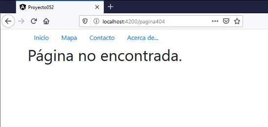

Como vimos en el concepto anterior en el archivo 'app-routing.module.ts' configuramos en el arreglo 'routes' todas las rutas que dispone nuestra aplicación (en el caso que nuestra aplicación conste de un solo módulo), ahora veremos que cambios debemos hacer en el archivo para capturar una ruta inexistente e informar de tal situación al usuario.
Confeccionar una página que muestre una barra de navegación (emplear Bootstrap) con 4 enlaces: 'Inicio', 'Mapa', 'Contacto' y 'Acerca de..'.
Definir una ruta para cada sección de la página y en el caso de ingresar el usuario una ruta inexistente mostrar tal situación.
Crearemos primero el proyecto y debemos tener cuidado de indicar que utilizaremos rutas en la aplicación Angular:
ng new proyecto052 --routing
Creamos 5 componentes, 4 que representan cada una de las secciones del sitio web y una quinta de ruta inexistente (lo que comunmente conocemos "404 page not found", tener en cuenta que Angular no hace realmente una petición al servidor, sino que tiene toda la información ya cargada en el navegador)
Creación de las componentes:
ng g c Inicio ng g c Mapa ng g c Contacto ng g c AcercaDe ng g c Pagina404
Modificamos el archivo 'app-routing.module.ts' especificando las rutas de nuestra aplicación:
import { NgModule } from '@angular/core';
import { Routes, RouterModule } from '@angular/router';
import { InicioComponent } from './inicio/inicio.component';
import { MapaComponent } from './mapa/mapa.component';
import { ContactoComponent } from './contacto/contacto.component';
import { AcercaDeComponent } from './acerca-de/acerca-de.component';
import { Pagina404Component } from './pagina404/pagina404.component';
const routes: Routes = [
{
path: '',
component: InicioComponent
},
{
path: 'inicio',
component: InicioComponent
},
{
path: 'mapa',
component: MapaComponent
},
{
path: 'contacto',
component: ContactoComponent
},
{
path: 'acercade',
component: AcercaDeComponent
},
{
path: 'pagina404',
component: Pagina404Component
},
{
path: '**',
redirectTo: 'pagina404'
}
];
@NgModule({
imports: [RouterModule.forRoot(routes)],
exports: [RouterModule]
})
export class AppRoutingModule { }
La última componente del arreglo es la que indicamos en path la cadena '**' y mediante el atributo 'redirectTo' especificamos a que otro path redireccionar:
{
path: '**',
redirectTo: 'pagina404'
}
Es indispensable para el funcionamiento que la captura de ruta inexistente con los "**" sea la última del arreglo.
Si el usuario no carga ninguna ruta, sino directamente el nombre del dominio, luego tenemos que se mustra la componente 'InicioComponent':
{
path: '',
component: InicioComponent
},
Modificamos el archivo 'index.htm' para indicar que utilizaremos Bootstrap para la interfaz visual del sitio:
<!doctype html> <html lang="en"> <head> <meta charset="utf-8"> <title>Proyecto052</title> <base href="/"> <meta name="viewport" content="width=device-width, initial-scale=1"> <link rel="icon" type="image/x-icon" href="favicon.ico"> <link rel="stylesheet" href="https://stackpath.bootstrapcdn.com/bootstrap/4.4.1/css/bootstrap.min.css" integrity="sha384-Vkoo8x4CGsO3+Hhxv8T/Q5PaXtkKtu6ug5TOeNV6gBiFeWPGFN9MuhOf23Q9Ifjh" crossorigin="anonymous"> </head> <body> <app-root></app-root> <script src="https://code.jquery.com/jquery-3.4.1.slim.min.js" integrity="sha384-J6qa4849blE2+poT4WnyKhv5vZF5SrPo0iEjwBvKU7imGFAV0wwj1yYfoRSJoZ+n" crossorigin="anonymous"></script> <script src="https://cdn.jsdelivr.net/npm/popper.js@1.16.0/dist/umd/popper.min.js" integrity="sha384-Q6E9RHvbIyZFJoft+2mJbHaEWldlvI9IOYy5n3zV9zzTtmI3UksdQRVvoxMfooAo" crossorigin="anonymous"></script> <script src="https://stackpath.bootstrapcdn.com/bootstrap/4.4.1/js/bootstrap.min.js" integrity="sha384-wfSDF2E50Y2D1uUdj0O3uMBJnjuUD4Ih7YwaYd1iqfktj0Uod8GCExl3Og8ifwB6" crossorigin="anonymous"></script> </body> </html>
Procedemos a modificar la vista de la componente que crea Angular 'app.component.html' donde creamos la barra de navegación con los enlaces a las distintas rutas de nuestra aplicación:
<div class="container">
<div class="row">
<ul class="nav justify-content-center">
<li class="nav-item">
<a class="nav-link" routerLink="inicio">Inicio</a>
</li>
<li class="nav-item">
<a class="nav-link" routerLink="mapa">Mapa</a>
</li>
<li class="nav-item">
<a class="nav-link" routerLink="contacto">Contacto</a>
</li>
<li class="nav-item">
<a class="nav-link" routerLink="acercade">Acerca de...</a>
</li>
</ul>
</div>
<div class="row">
<router-outlet></router-outlet>
</div>
</div>
Es importante utilizar la propiedad 'routerLink' para indicar cada una de las rutas.
Disponemos la etiqueta 'router-outlet', que sabemos que es el espacio que será sustituido por la componente respectiva definida en el arreglo 'router'.
Finalmente agregamos algunos datos a cada una de las 5 componentes que representas las secciones de nuestro sitio web:
inicio.component.html
<h1>Contenido de página de inicio.</h1>
mapa.component.html
<h1>Contenido de página de mapa.</h1>
contacto.component.html
<h1>Contenido de página de contacto.</h1>
acercade.component.html
<h1>Contenido de página de acerca de.</h1>
pagina404.component.html
<h1>Página no encontrada.</h1>
Con los pasos dados ya tenemos nuestro sitio que muestra correctamente cada una de las rutas definidas para nuestro sitio web, y en el caso que el usuario ingrese una ruta no válida:
Se procede a redireccionar y mostrar la componente que hemos estipulado nosotros:
Es nuestra decisión a que página redireccionar, podemos inclusive no informar nada y redireccionarlo a la página principal del sitio.
Podemos probar esta aplicación en la web aquí.